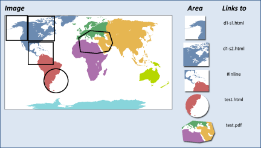

<imagemap>
The <imagemap> element supports the
basic functionality of the HTML "client-side" image map markup.
<imagemap> allows you to designate
a linkable area or region over an image, allowing a link in that region to display another
topic.
Usage information
An HTML client-side image map binds an image to the navigation structure (the "map") by
means of an ID association from the map to the image. In contrast, the DITA version of
<imagemap> markup simply includes
the target image as the first required element in the markup, followed by a sequence of
<area> elements that represent
the links associated with the contained image.
The <xref> content within
<area> contains the intended
alternative text or hover text for that image map area. Normal text retrieval for
<xref> elements can be used to
populate that alternative text.
Rendering expectations
An <imagemap> structure can be
rendered as a standard HTML image map or as an alternative form of navigation (such as
table-based image maps). When rendered in PDF, the minimal form would be to represent the
image; advanced PDF output processors could provide equivalent region-oriented hyperlinks.
Specialization hierarchy
The <imagemap> element is
specialized from <div>. It is
defined in the utilities-domain module.
Attributes
The following attributes are available on this element:
universal attributes,
display attributes, and
@spectitle.
Example
<imagemap> with five areas, using
three different shapes:
<imagemap>
<image href="imagemapworld.jpg">
<alt>Map of the world showing 5 areas</alt>
</image>
<area><shape>rect</shape><coords>2,0,53,59</coords>
<xref href="d1-s1.dita">Section 1 alternative text</xref>
</area>
<area><shape>rect</shape><coords>54,1,117,60</coords>
<xref href="d1-s2.dita"><!-- Pull title from d1-s2.dita --></xref>
</area>
<area><shape>rect</shape><coords>54,62,114,116</coords>
<xref href="#inline" type="topic">Alternative text for this rectangle</xref>
</area>
<area><shape>circle</shape><coords>120,154,29</coords>
<xref format="html" href="test.html">Link to a test html file</xref>
</area>
<area><shape>poly</shape>
<coords>246,39,200,35,173,52,177,86,215,90,245,84,254,65</coords>
<xref format="pdf" href="test.pdf">Link to a test PDF file</xref>
</area>
</imagemap>
The values for use in the
<shape> and
<coords> elements follow the
guidelines defined for image maps in HTML 4.1,
Client-side image maps: the MAP and AREA elements